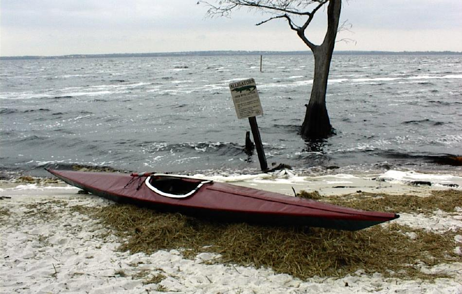

| Sea Tour 15 by Mike Wolfson | Menu Previous Page Next Page |
|

Mike Wolfson's Sea Tour 15 (15ft X 22in) at Lake Louisa, Florida. Note the Alligator warning !
"I found the Sea Tour’s initial stability to be good, with very good secondary stability. It tracks very well, especially considering how maneuverable it is. It can either be edged up to turn, or simply pivoted with a sweep stroke. It probably took me about 30 mins. to assemble and about 15 to disassemble. I must admit that I wasn’t all that comfortable in the 25mph winds(being out alone), so after a while I moved to another lake with much smaller waves (still windy but less fetch). I was impressed that the Sea Tour could be pointed in almost any direction to the wind and hardly have any affect (wind cocking). I only noticed the wind when it was coming from behind at an angle, and I only had to sweep stoke about every 15th or 20th stroke." .....Mike. The Sea Tour 15 / 15-R Offsets are at the end of this section. Use the (BACK) key to return. |
|